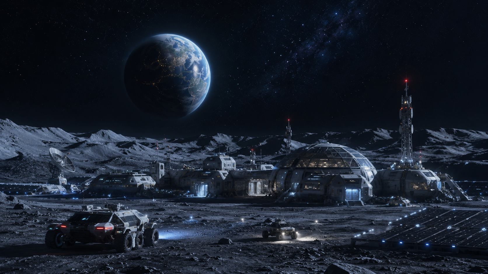

Gestão de recursos
O jogador precisa equilibrar energia, água, oxigênio e alimentos para manter a colônia funcionando.
Operação Selene
Comande uma base lunar em um jogo de estratégia e gerenciamento de recursos. Responda perguntas técnicas, construa módulos e mantenha a missão ativa por 10 semanas.

Em Operação Selene, o jogador aprende sustentabilidade, tecnologia e tomada de decisão ao administrar uma base lunar com recursos limitados.
O jogador precisa equilibrar energia, água, oxigênio e alimentos para manter a colônia funcionando.
As perguntas técnicas conectam ciência, tecnologia e sustentabilidade com consequências dentro do jogo.
Cada escolha interfere na sobrevivência da base, incentivando planejamento e pensamento crítico.
A exploração espacial impulsiona avanços em energia, comunicação, automação e monitoramento ambiental. Tecnologias desenvolvidas para ambientes extremos também podem melhorar soluções usadas na Terra.
A proposta se relaciona com o ODS 2 ao abordar segurança alimentar, produção de alimentos em ambientes extremos, uso eficiente de recursos e soluções tecnológicas para sustentar comunidades em condições desafiadoras.